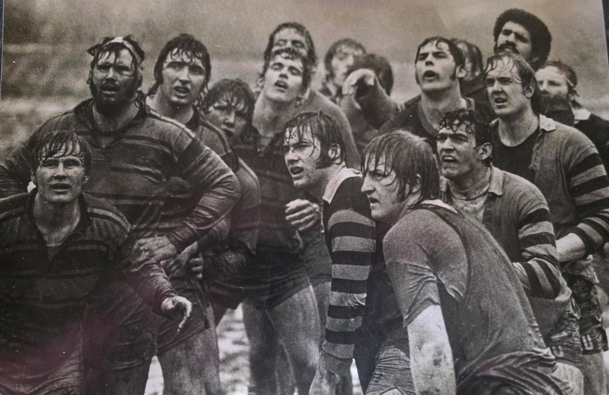
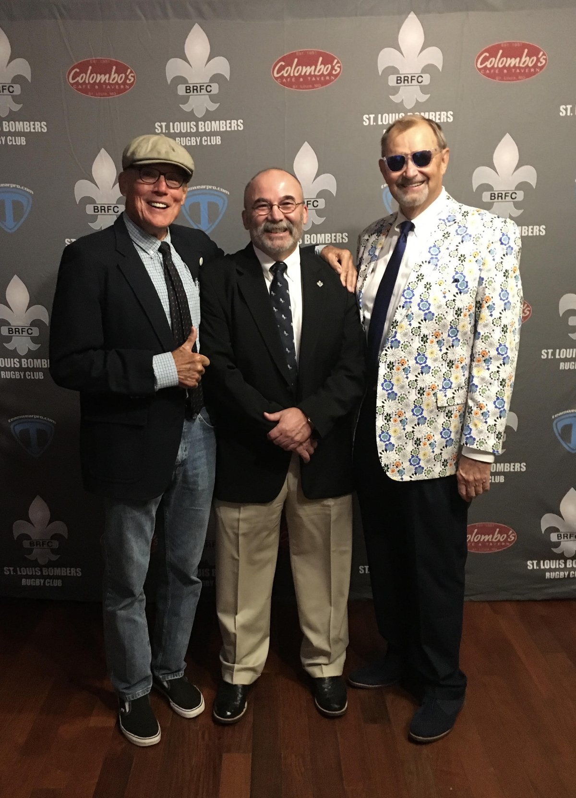

John Tarpoff: The Butcher, and Fifty Years in the Front Row
Some players are remembered for what they scored. John Tarpoff is remembered for what his teammates did not have to worry about while he was on the field. He arrived in Columbia in the early 1970s as an all-state Illinois wrestler, went straight into the back row, and spent the next four seasons making Missouri a harder side to play against — then spent the following fifty years in the game as a prop, a referee, a coach and a club man.
Tarpoff played at Mizzou through the first half of the 1970s, mainly at flanker, though he could slide into the front row as a loose prop whenever the side needed him there. Wrestling had given him something most freshmen do not have: he came in already fit and already skilled at fighting for the ball on the ground. He was a first-team selection more or less immediately, and he did not give the shirt back.
He also ran the place. He served as the club's vice-president in 1973–74 and then as its president through the fall of 1974 and into 1975. In a self-funded student club with no budget and no conference to play in, those were not ceremonial jobs.
The First Big Eight Championship
In March 1974 the club put on the first Big Eight Rugby Tournament at Reactor Field — an event Missouri organised itself, and then won. Tarpoff led the scrum through it. The Tigers came through the draw and beat Iowa State 19–18 in a final played in front of a roaring home crowd, and Missouri became the first Big Eight rugby champion. The full account of that weekend is on the 1973–74 season page.
The Big Eight was only part of the schedule. Missouri also entered the Kansas City Heart of America Tournament and the St. Louis Easter Ruggerfest, which in that era meant playing Division I men's club sides — the St. Louis Bombers, the St. Louis Falcons, Des Moines, Kansas City RFC, the KC Blues, the Chicago Lions. Teammate Jim Dierker, who played alongside him, is blunt about what Tarpoff's presence in the starting XV meant: with him in the back row, a student side could hold its own against grown men who had been playing club rugby for a decade.

“The Butcher”
The nickname was not ironic. A muscular build and a heavy beard made him look a decade older than the students he played with, and he took a specific view of his job: he did not tolerate foul play against his teammates. In one home match at Reactor Field in 1974, after what Dierker describes as a vicious cheap shot, Tarpoff knocked out the KC Blues hooker — an act his teammates regarded as entirely just. The point was never the retaliation. The point was that Missouri's younger players knew someone was watching out for them.
He applied the same philosophy to the rookies, in a rather more sustained way. Tarpoff believed new players learned the game through pain and sacrifice and set about toughening them up accordingly. Plenty of clubs have an enforcer. Fewer have one who also teaches.
On the field he was almost always the first man to the breakdown, either taking the ball up on the blind side or getting it back to the scrum half by ruck or by hand. He saved his best rugby for the hardest opponents — Palmer College, Central Methodist, the Big Eight sides, and the city clubs.
After Columbia
Tarpoff's post-Mizzou career reads like a map of American rugby in the 1970s and 1980s. He joined the St. Louis Bombers in 1974 and stayed until 1982, moving permanently into the front row as a prop and hooker. In 1974 he also played rugby league in Australia for the Moranbah Brumbies, coming home with a Leichhardt League championship. He represented Missouri from 1976 to 1981 and the Western USA select side from 1977 to 1981. Along the way he collected a Mardi Gras title with Iowa State RFC in Hammond, Louisiana in 1977, and two Aspen championships with Minneapolis RFC — Ruggerfest in 1978 and the Masters in 1998, twenty years apart.
Then a severe injury ended his playing days, and the game found another use for him. Like most players, Tarpoff had spent years complaining about referees. His teammates and his opponents both told him to go and do it himself. He refereed from 1983 to 2003, served as head referee of the Missouri Rugby Football Union from 1995 to 2001, and travelled the country taking the matches nobody else wanted. Having played at the highest level he could reach, in the front row, he saw a game differently from most officials.
He coached too — at St. Louis University High School from 1995 to 1999, qualifying for nationals every year. The most rewarding part of that work was closer to home: he coached his son, John Jr., who went on to the USA Eagles at Under-19 and then at senior level, and played professionally in Wales.

The Club Man
Fifty years on, Tarpoff is still a Bomber. He is a Hall of Fame member, a lifetime member and a donor — including to the clubhouse fund. Away from rugby he served as president of the Trails West Council of the Boy Scouts of America in 1995–96 and is a Vigil Honor member of the Order of the Arrow.
He has stayed in constant contact with his Mizzou teammates since graduation; most of his closest friends followed him to the Bombers. Pat Costigan, writing about his own fifty years of friendships, names Tarpoff among the men he has stayed closest to.
Dierker sums up his teammate's sportsmanship in one line: fair play always, but don't mess with my teammates. It is a description of a way of playing that a lot of Mizzou sides have benefited from, and it explains why a student club in the 1970s could walk onto a field against men's clubs and expect to be there at the end.
“Life should not be a journey to the grave with the intention of arriving safely in an attractive preserved body, but rather skid in sideways, covered in scars, body thoroughly used up, totally worn out, and screaming ‘Yahoo, what a ride!’” — John Tarpoff's motto
Career details and recollections in this profile come from his teammate Jim Dierker, along with photographs from Tarpoff's own collection, August 2026. Some dates in the club's records still conflict — his first season at Mizzou is given variously as 1971, 1972 and 1973. If you can settle it, or add to this account, get in touch.